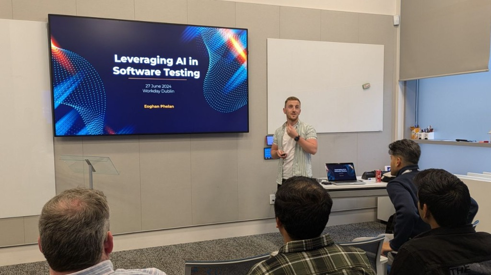
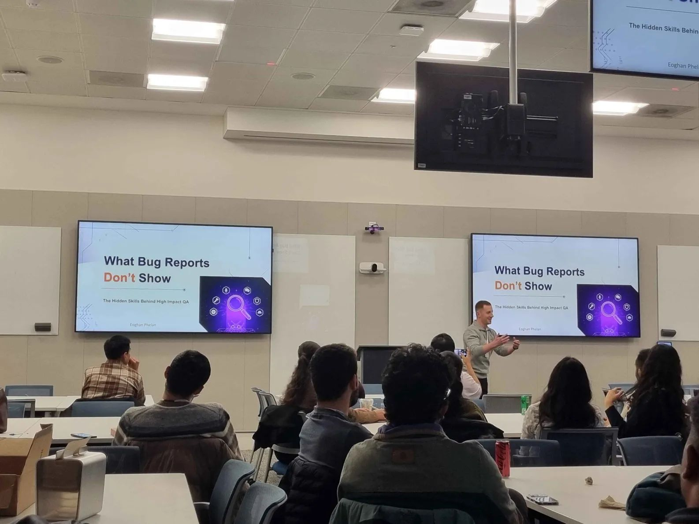
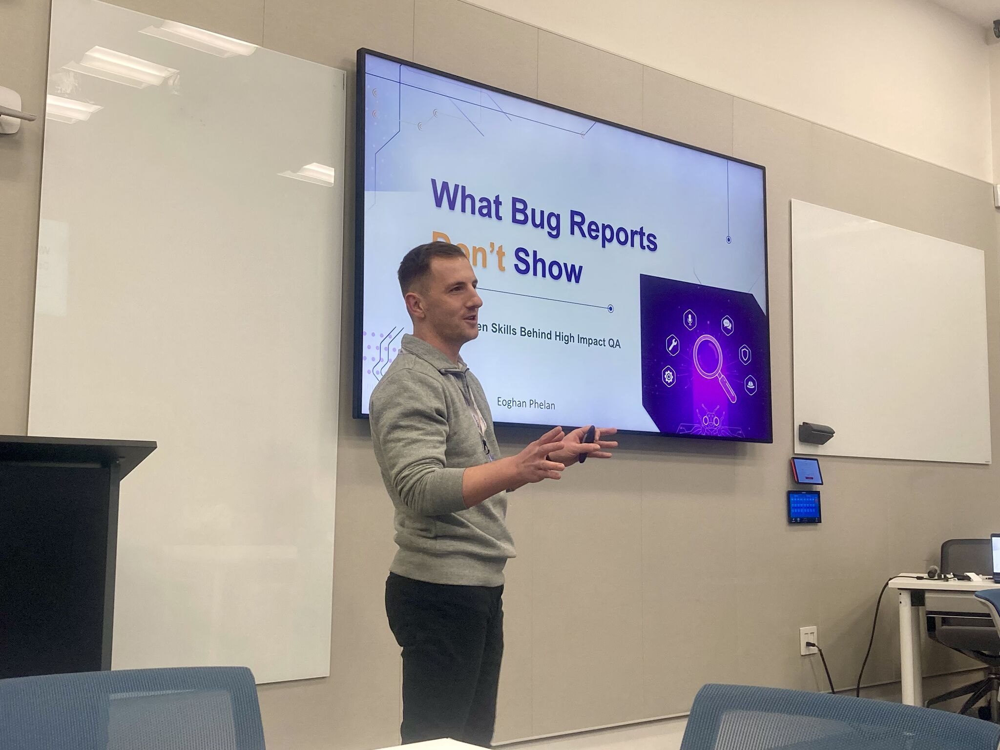

Helping engineering teams ship reliable software at speed
10+ years of experience architecting scalable automation frameworks, embedding shift-left quality, and validating AI & web applications for startups, scaleups, and enterprise engineering teams.
Technical Capabilities
Pragmatic quality solutions designed to eliminate release bottlenecks and build lasting engineering confidence.
UI Automation Frameworks
Architecting maintainable, fast end-to-end test suites designed to catch visual and functional regressions before production.
API & Integration Testing
Validating core business logic, contracts, and data pipelines directly at the API layer for high execution speed and stability.
CI/CD Pipeline Integration
Embedding automated test checks into deployment pipelines to provide rapid feedback without blocking development velocity.
Shift-Left Quality Strategy
Moving quality upstream into requirement refinement and design, reducing defect resolution cost and release risk.
Test Process Optimisation
Analysing existing QA workflows to eliminate flaky tests, shorten execution cycles, and streamline bug triaging.
Quality Coaching & Leadership
Fostering team-wide quality ownership, mentoring developers on testing practices, and leading Scrum team quality initiatives.
Performance & Load Testing
Simulating user traffic load to pinpoint latency bottlenecks, memory leaks, and infrastructure limits before major traffic events.
AI & Agentic System Testing
Evaluation frameworks for non-deterministic AI behaviour, LLM output accuracy, prompt regression, and agentic workflows.
Security & Accessibility Audit
Automated vulnerability scanning alongside manual exploratory testing aligned to OWASP Top 10 and WCAG 2.1 compliance standards.
About Me
With over 10 years of professional experience, I specialise in transforming QA from a release blocker into a strategic engineering driver.
I have led quality engineering teams across startups and enterprise platforms, designing custom automation frameworks, scaling test infrastructure, and establishing quality standards that empower developers to ship faster with confidence.



Community & Technical Leadership
I am passionate about advancing the software quality discipline through community leadership and technical writing.
As a chapter leader for BrowserStack's Software Testing Meetup Group in Dublin, I host events sharing best practices in modern test automation and engineering leadership.
I regularly publish articles covering software quality, test automation strategy, and AI evaluation on Medium.
Read articles on MediumLet's Build Quality Into Your Product
Whether you need a QA strategy audit, a scalable test automation framework, or advisory on testing AI applications, let's connect.